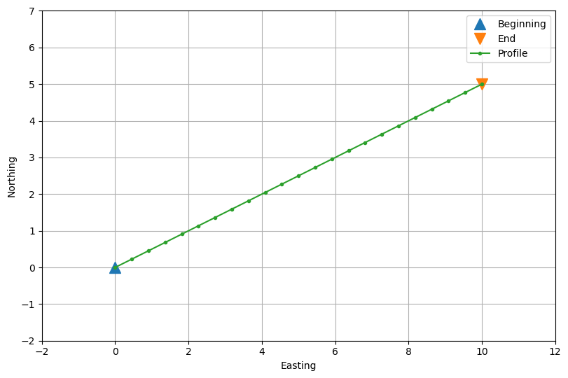
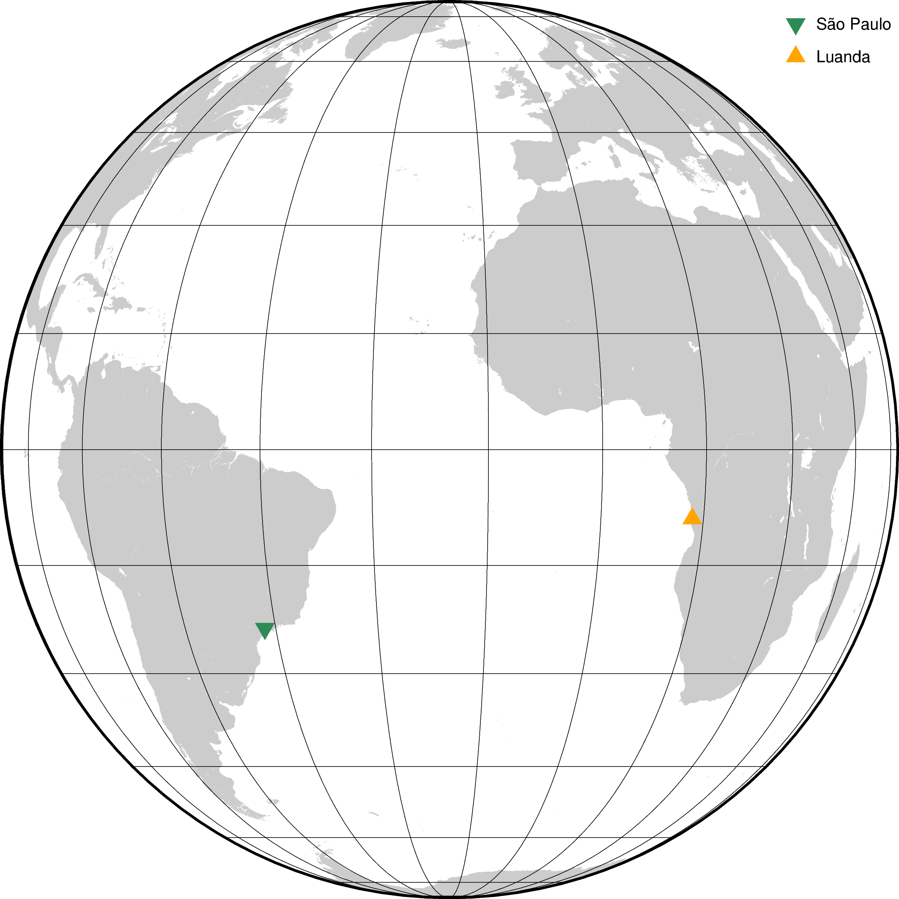
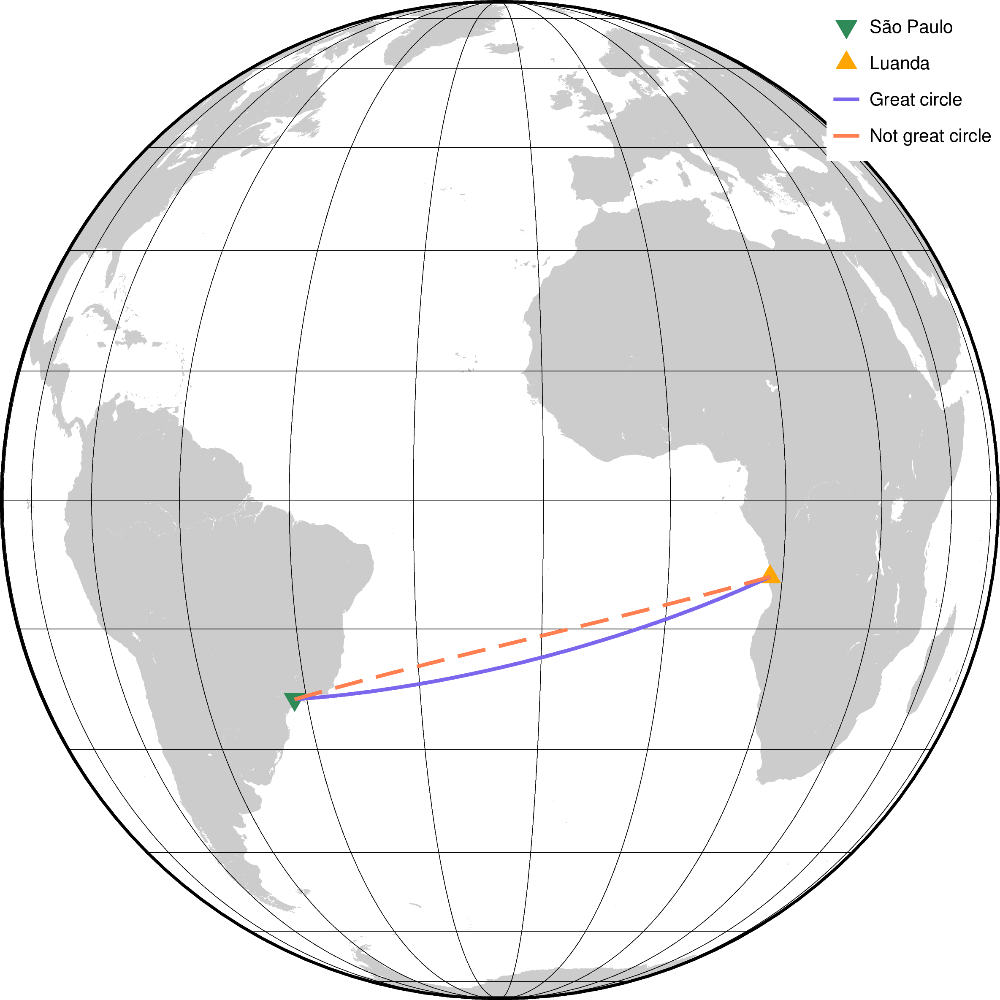

Profiles between two points#
It’s common to need evenly spaced coordinate values between two points
to extract or interpolate profiles from regular grid data. However,
generating such points is not always trivial, particularly when we
want to take the curvature of the Earth into account or want to specify
the spacing between points instead of the number of points. Bordado
offers functions bordado.profile_coordinates (Cartesian) and
bordado.great_circle_coordinates (spherical) to generate these
coordinates. Let’s see how we can use them!
import bordado as bd
import numpy as np
import matplotlib.pyplot as plt
import pygmt
Coordinates between two points in 2D#
Let’s say we have the 2D coordinates (think easting and northing, for example) for two points:
beginning = (0, 0) # easting, northing
end = (10, 5)
# Make a region for plotting later
region = bd.pad_region(bd.get_region(np.transpose((beginning, end))), 2)
print(region)
(-2, 12, -2, 7)
Tip
Functions bordado.get_region and bordado.pad_region
are very useful to extracting and modifying region information for plotting,
interpolation, and more!
We can use bordado.profile_coordinates to make coordinates for
evenly spaced points between them like so:
coordinates, distances = bd.profile_coordinates(
beginning, end, spacing=0.5,
)
The function returns the coordinates of the points as a tuple of two arrays:
for i, c in enumerate(coordinates):
print(f"coordinate {i}:\n{c}\n")
coordinate 0:
[ 0. 0.45454545 0.90909091 1.36363636 1.81818182 2.27272727
2.72727273 3.18181818 3.63636364 4.09090909 4.54545455 5.
5.45454545 5.90909091 6.36363636 6.81818182 7.27272727 7.72727273
8.18181818 8.63636364 9.09090909 9.54545455 10. ]
coordinate 1:
[0. 0.22727273 0.45454545 0.68181818 0.90909091 1.13636364
1.36363636 1.59090909 1.81818182 2.04545455 2.27272727 2.5
2.72727273 2.95454545 3.18181818 3.40909091 3.63636364 3.86363636
4.09090909 4.31818182 4.54545455 4.77272727 5. ]
Let’s plot the two reference points and the profile points:
fig, ax = plt.subplots(1, 1, figsize=(8, 6), layout="constrained")
ax.plot(*beginning, "^", markersize=12, label="Beginning")
ax.plot(*end, "v", markersize=12, label="End")
ax.plot(*coordinates, ".-", label="Profile")
ax.legend()
ax.grid()
ax.set_xlim(*region[:2])
ax.set_ylim(*region[2:])
ax.set_xlabel("Easting")
ax.set_ylabel("Northing")
ax.set_aspect("equal")
plt.show()

The second argument that is returned is an array with the distances between points along the profile:
print(distances)
[ 0. 0.50819727 1.01639454 1.5245918 2.03278907 2.54098634
3.04918361 3.55738087 4.06557814 4.57377541 5.08197268 5.59016994
6.09836721 6.60656448 7.11476175 7.62295901 8.13115628 8.63935355
9.14755082 9.65574808 10.16394535 10.67214262 11.18033989]
Notice that they are not exactly multiples of the spacing because the length of the profile was a not a multiple of it, and so the spacing was adjusted.
Note
There’s no option to adjust the region here since that would mean moving the beginning and end points of the profile.
Coordinates in more dimensions#
We can also generate these profile points in more than 2 dimensions. To do so, we just have to specify the coordinates of the beginning and end points with more than 2 dimensions:
beginning = (0, 0, 0) # easting, northing, upward
end = (10, 5, 7)
coordinates, distances = bd.profile_coordinates(
beginning, end, spacing=0.5,
)
for i, c in enumerate(coordinates):
print(f"coordinate {i}:\n{c}\n")
print(f"distances:\n{distances}")
coordinate 0:
[ 0. 0.38461538 0.76923077 1.15384615 1.53846154 1.92307692
2.30769231 2.69230769 3.07692308 3.46153846 3.84615385 4.23076923
4.61538462 5. 5.38461538 5.76923077 6.15384615 6.53846154
6.92307692 7.30769231 7.69230769 8.07692308 8.46153846 8.84615385
9.23076923 9.61538462 10. ]
coordinate 1:
[0. 0.19230769 0.38461538 0.57692308 0.76923077 0.96153846
1.15384615 1.34615385 1.53846154 1.73076923 1.92307692 2.11538462
2.30769231 2.5 2.69230769 2.88461538 3.07692308 3.26923077
3.46153846 3.65384615 3.84615385 4.03846154 4.23076923 4.42307692
4.61538462 4.80769231 5. ]
coordinate 2:
[0. 0.26923077 0.53846154 0.80769231 1.07692308 1.34615385
1.61538462 1.88461538 2.15384615 2.42307692 2.69230769 2.96153846
3.23076923 3.5 3.76923077 4.03846154 4.30769231 4.57692308
4.84615385 5.11538462 5.38461538 5.65384615 5.92307692 6.19230769
6.46153846 6.73076923 7. ]
distances:
[ 0. 0.50734254 1.01468507 1.52202761 2.02937015 2.53671268
3.04405522 3.55139776 4.05874029 4.56608283 5.07342537 5.58076791
6.08811044 6.59545298 7.10279552 7.61013805 8.11748059 8.62482313
9.13216566 9.6395082 10.14685074 10.65419327 11.16153581 11.66887835
12.17622088 12.68356342 13.19090596]
Notice that now we have 3 coordinate arrays in the output, each starting and finishing at the corresponding values of the beginning and end points. The spacing was also adjusted to match the length of the 3D vector between the two points.
Coordinates along a great circle path#
If our coordinates are geographic longitude and latitude (angles
in degrees or radians), we probably don’t want to use them with
bordado.profile_coordinates since that would assume that they are
Cartesian coordinates. In these cases, we generally want the shortest path
along the surface of a sphere. This is called a great circle and we can
generate coordinates along one using bordado.great_circle_coordinates.
Let’s set up our two points on the sphere with coordinates in degrees and plot
them on a map with pygmt:
são_paulo = (-46.7011, -23.5604) # longitude, latitude (degrees)
luanda = (13.2559, -8.8549)
fig = pygmt.Figure()
fig.coast(land="#cccccc", region="g", projection="G-20/0/20c", frame="afg")
fig.plot(x=são_paulo[0], y=são_paulo[1], style="i0.5c", fill="seagreen", label="São Paulo")
fig.plot(x=luanda[0], y=luanda[1], style="t0.5c", fill="orange", label="Luanda")
fig.legend(position="jTR+l2p")
fig.show()

Now we can make a great circle path between them with points at every 100 km (100,000 meters) like so:
coordinates, distances = bd.great_circle_coordinates(
são_paulo, luanda, spacing=100_000,
)
The coordinates are a tuple of two arrays with the longitude and latitude of the points in degrees:
print(f"longitude:\n{coordinates[0]}\n")
print(f"latitude:\n{coordinates[1]}\n")
longitude:
[-46.7011 -45.72837693 -44.75661443 -43.78589683 -42.81630691
-41.84792574 -40.88083262 -39.91510497 -38.95081818 -37.98804559
-37.02685833 -36.0673253 -35.10951303 -34.15348567 -33.19930485
-32.2470297 -31.29671674 -30.34841984 -29.40219018 -28.45807624
-27.51612372 -26.57637554 -25.63887184 -24.70364992 -23.77074426
-22.8401865 -21.91200546 -20.98622712 -20.06287466 -19.14196842
-18.223526 -17.3075622 -16.39408908 -15.48311602 -14.57464968
-13.66869411 -12.76525074 -11.86431843 -10.96589353 -10.06996991
-9.17653901 -8.28558987 -7.39710924 -6.51108156 -5.62748907
-4.7463118 -3.86752771 -2.99111268 -2.11704057 -1.24528333
-0.37581098 0.49140826 1.35640797 2.21922344 3.07989161
3.93845105 4.79494187 5.64940568 6.50188551 7.35242581
8.20107234 9.04787214 9.89287349 10.73612584 11.57767977
12.41758693 13.2559 ]
latitude:
[-23.5604 -23.49831292 -23.4301933 -23.35606696 -23.27596186
-23.18990815 -23.09793803 -23.00008582 -22.89638782 -22.78688234
-22.6716096 -22.55061174 -22.42393271 -22.29161827 -22.15371592
-22.01027483 -21.86134583 -21.70698131 -21.5472352 -21.3821629
-21.21182124 -21.03626839 -20.85556384 -20.66976834 -20.47894381
-20.28315335 -20.08246112 -19.87693232 -19.66663313 -19.45163068
-19.23199293 -19.00778872 -18.77908764 -18.54595999 -18.30847678
-18.06670963 -17.82073078 -17.57061298 -17.31642949 -17.05825406
-16.79616081 -16.53022429 -16.26051936 -15.98712122 -15.71010532
-15.42954737 -15.1455233 -14.8581092 -14.56738133 -14.27341607
-13.97628993 -13.67607947 -13.37286132 -13.06671215 -12.75770864
-12.44592749 -12.13144536 -11.8143389 -11.4946847 -11.17255929
-10.84803915 -10.52120067 -10.19212013 -9.86087376 -9.52753763
-9.19218776 -8.8549 ]
Notice that both arrays start at the coordinates for São Paulo and end at the coordinates for Luanda.
The distances are the great circle distances between points in the profile and the starting point (São Paulo) in meters:
print(distances)
[ 0. 99408.54874711 198817.09749421 298225.64624132
397634.19498842 497042.74373553 596451.29248264 695859.84122974
795268.38997685 894676.93872395 994085.48747106 1093494.03621817
1192902.58496527 1292311.13371238 1391719.68245949 1491128.23120659
1590536.7799537 1689945.3287008 1789353.87744791 1888762.42619502
1988170.97494212 2087579.52368923 2186988.07243633 2286396.62118344
2385805.16993055 2485213.71867765 2584622.26742476 2684030.81617186
2783439.36491897 2882847.91366608 2982256.46241318 3081665.01116029
3181073.55990739 3280482.1086545 3379890.65740161 3479299.20614871
3578707.75489582 3678116.30364293 3777524.85239003 3876933.40113714
3976341.94988424 4075750.49863135 4175159.04737846 4274567.59612556
4373976.14487267 4473384.69361977 4572793.24236688 4672201.79111399
4771610.33986109 4871018.8886082 4970427.4373553 5069835.98610241
5169244.53484952 5268653.08359662 5368061.63234373 5467470.18109084
5566878.72983794 5666287.27858505 5765695.82733215 5865104.37607926
5964512.92482637 6063921.47357347 6163330.02232058 6262738.57106768
6362147.11981479 6461555.6685619 6560964.217309 ]
Again, notice that these are approximately the chosen spacing but not exactly since they had to be adjusted to fit the length of the path between points.
Let’s now plot the profile and also a version of the profile created with
profile_coordinates for comparison:
# The spacing here is in degrees, but the path is not a great circle
coordinates_wrong, _ = bd.profile_coordinates(
são_paulo, luanda, spacing=1,
)
fig = pygmt.Figure()
fig.coast(land="#cccccc", region="g", projection="G-20/0/20c", frame="afg")
fig.plot(x=são_paulo[0], y=são_paulo[1], style="i0.5c", fill="seagreen", label="São Paulo")
fig.plot(x=luanda[0], y=luanda[1], style="t0.5c", fill="orange", label="Luanda")
fig.plot(x=coordinates[0], y=coordinates[1], pen="2p,slateblue2", label="Great circle")
fig.plot(x=coordinates_wrong[0], y=coordinates_wrong[1], pen="2p,coral,-", label="Not great circle")
fig.legend(position="jTR+l2p", box=pygmt.params.Box(fill="white"))
fig.show()

We can clearly see in the plot that the two profiles take different paths, which
is why you should always use great_circle_coordinates when
dealing with longitude and latitude!
What’s next#
We can now create points along profiles with both Cartesian and geographic coordinates! Another task you may have, particularly when sampling or generating synthetic data, is to create a random spread of points. See how this can be done with Bordado in “Random coordinates”.
Have questions?
Please ask on any of the Fatiando a Terra community channels!